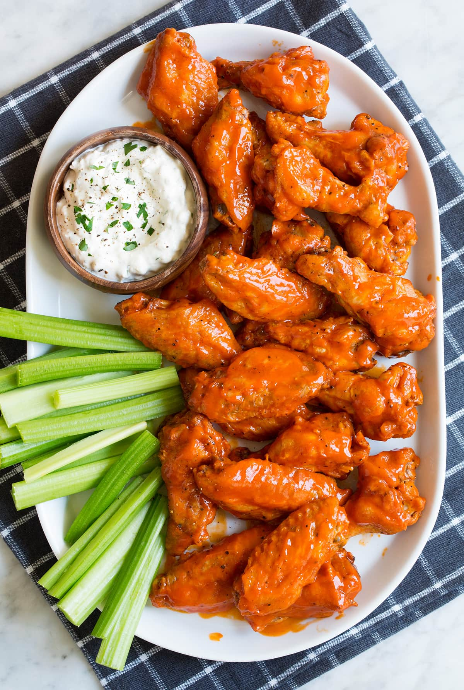

Buffalo Wings

Description
This recipe feeds about four hungry people. If it's a part of a larger game day spread, six people could probably get in on it. However, there's never any harm in doubling the recipe—people will always want more buffalo wings.
Ingredients
- 2 lb. chicken wings
- 2 tbsp. Vegetable oil
- 1 tsp. garlic powder
- Kosher salt
- Freshly ground black pepper
- 1/4 c. hot sauce (such as Frank's)
- 2 tbsp. honey
- 4 tbsp. butter
- Ranch dressing, for serving
- Carrot sticks, for serving
- Celery sticks, for serving
Steps
- Preheat oven to 400° and place a wire rack over a baking sheet. In a large bowl, toss chicken wings with oil and season with garlic powder, salt, and pepper. Transfer to prepared baking sheet.
- Bake until chicken is golden and skin is crispy, 50 to 60 minutes, flipping the wings halfway through.
- In a small saucepan, whisk together hot sauce and honey. Bring to simmer then stir in butter. Cook until butter is melted and slightly reduced, about 2 minutes. Heat broiler on low. Transfer baked wings to a bowl and toss with buffalo sauce until completely coated. Return wings to rack and broil—watching carefully!—until sauce caramelizes, 3 minutes. Serve with ranch dressing and vegetables.
Home